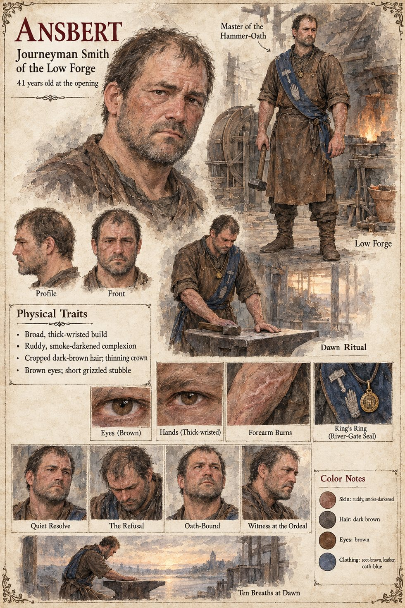

Ansbert
Journeyman smith of the Low Forge, later Master of the Hammer-Oath · buyer of the sack · 41 at the opening
A journeyman smith of forty-one, thick-wristed and slow-spoken, with a face like a clenched fist that has been taught to apologize. In nine years he has presented himself to the Proof of the Hammer-Oath Guild for mastery three times, and three times his best blade has rung like a bell under the first stroke, sprung clean under the second and split along its length under the third: the failure of a man who did everything correctly and was ruined by the one thing no one could teach. He keeps the Low Forge anyway, a lean-to of stone and smoke-black timber against the old wall at the far edge of the Low Market, with one hearth, one anvil and a bellows driven by a treadwheel, where the ox Brun walks and his master explains every decision of the day to him in a low continuous murmur. On the ninth of Deyren he has exactly nine pennies in his belt-pouch, which is the month's stall-rent, and a hawker in the Low Market names that sum for a linen sack of black powder that takes a line on iron and keeps it. He pays it. Sigebert Marl notes the empty hand and grants the forge a grace until the Proof-day.
The powder goes into the crucible by accident on the seventeenth, swept off the anvil by the besom of his fourteen-year-old apprentice, Lantfrid, and the blade that comes out of the pot rings with a note that goes on in the air like a bell dwindling. The man who tests it is a tall stranger the household has taken in off the Hohlweg, Tomobe no Higaide, who came into this country nineteen years before through the Stone of Case 2231: he lays the flat across his palm, cuts once through the air, bows to the sword and says Bon, which is the whole examination. The household turns the circumstances of that first success into a rule, the scoop levelled with the back of a knife and the besom under the right elbow, and Ansbert catches from the stranger a hand laid flat on the anvil at dawn for ten breaths. When the Guildmaster, Gundobad Rotger, offers him the mastery, a house in the Middle Town and the forge rebuilt in stone in return for the method, he says he will think, and on the first of Brayen tells him to his face that he cannot give what he does not own.
He is made a master anyway, on the first of Lorren in the thirty-second year of the reign, by nine to nothing and without being Proved, the only mastery the Hammer-Oath ever conferred without the Third Stroke; he lays the blue sash over Brun's partition and tells the ox it was what he wanted for twenty years and that he does not know where he put the wanting. King Theudebald sends for him, asks whether a sword could be made that would fail, and gives him a plain gold ring with the seal of the river-gate, which he wears on a cord at his neck and is never once asked to show. At the Ordeal in the cathedral he stands by the north pillar in the sash and tells the Hierarch that both blades are Whole and that he cannot say which is the better. He makes the last of the hundred and forty-four on the tenth of Averin and never makes another: for the rest of a long life the best ordinary ironmongery in Austrenne, which breaks honestly at the Third Stroke as a hoe should, and for twenty-six years a palm on the cold face of the anvil before the cocks, taken away after ten breaths and looked at as a man looks at the palm of another.
His wife Hiltrude, his apprentice Lantfrid and the Guildmaster Gundobad Rotger have pages of their own; Higaide has no sheet in this case, so his page is the one filed under Case 2231. The manuscript gives Ansbert's age, his build, his face and his hands; the sheet's ruddy, smoke-darkened skin, cropped dark-brown hair thinning at the crown, brown eyes, short grizzled stubble and burn-scarred forearms are its own. Its captions, Master of the Hammer-Oath over a figure in a blue sash worked with a hammer and a raised hand, Dawn Ritual and Ten Breaths at Dawn, follow the household's rule; its expression panels run Quiet Resolve, The Refusal, Oath-Bound and Witness at the Ordeal.
“I will think.”
Appears In

Related Subjects


Related Records

At grey dawn in the Low Market the Black-Salt Peddler loosens the thong of a linen sack, and Ansbert draws one thick forefinger through the dull black powder and leaves a hair-thin silver line along the trestle's edge; the hawker's donkey sleeps on its feet behind the peddler. Ansbert pays nine pennies, the month's stall-rent, for the sack.

In the evening light of the lean-to Hiltrude counts the sack into a hundred and forty-four heaps of black powder with a horn spoon and the flat of a knife, her lips moving, while Ansbert sits at the settle by the wall with a bowl of barley on his knee.

The powder goes into the crucible by accident: Lantfrid, frozen mid-stroke, has swept it off the anvil's edge with the besom held under his right elbow, while Ansbert tends the fire with his back turned and Higaide lowers his eyes in tact beside Brun at the treadwheel.

In the Proof-Hall the Guildmaster Gundobad Rotger stares at the bright crescent bitten into the steel face of the Guild's mallet while the sword in the Proof-Post is still singing; Ansbert stands rigid in his too-tight coat, Higaide looks at the floor behind him, and Sigebert Marl holds a wax tablet at the lectern.